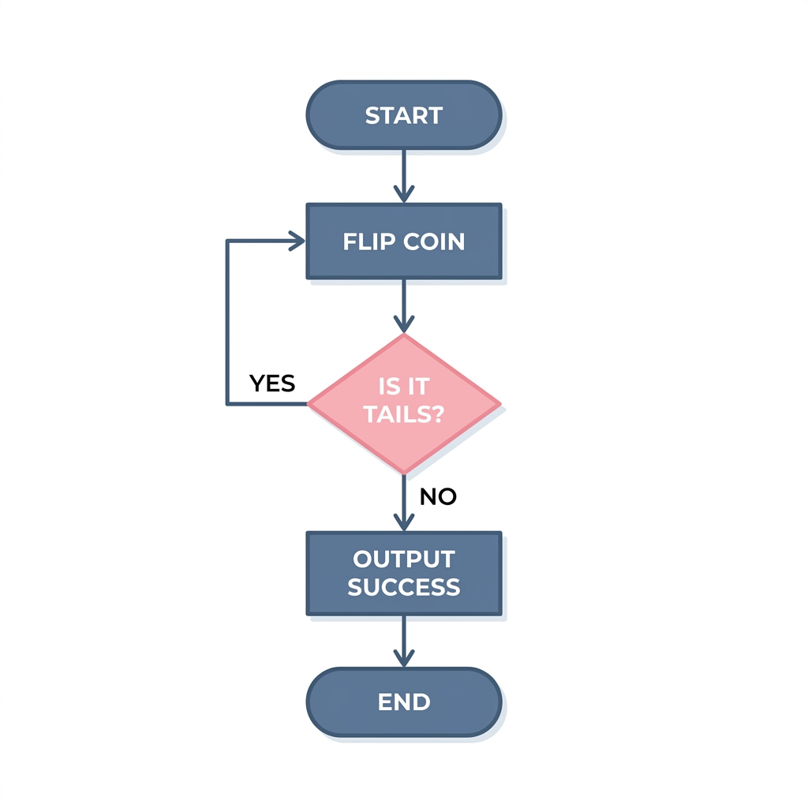

Randomized Algorithms: Foundations
Agenda
- A Simple Mathematical Fact — the inner product mod 2.
- Application: Freivalds’ Algorithm — verifying matrix products in O(n^2) time.
- Formal Foundations — state machines & random tape models.
- Two Flavors — Las Vegas vs. Monte Carlo.
- Boosting — one-sided error amplification.
A Simple Mathematical Fact
Let’s begin with a fundamental algebraic property of random vectors:
- Let d \in \{0, 1\}^n be a fixed, non-zero boolean vector.
- Let r \in \{0, 1\}^n be a random boolean vector, where each r_i \in \{0, 1\} is chosen independently and uniformly at random: \Pr[r_i = 1] = \Pr[r_i = 0] = \frac{1}{2}
Proof of the Mod-2 Lemma
Since d \neq 0, there exists at least one coordinate k where d_k = 1.
- We can partition the sum: d \cdot r = d_k r_k + \sum_{i \neq k} d_i r_i \equiv r_k + \sum_{i \neq k} d_i r_i \pmod 2
- Let S = \sum_{i \neq k} d_i r_i \bmod 2. Its value is determined entirely by the choices of r_i for i \neq k.
- To make d \cdot r \equiv 0 \pmod 2, we must have: r_k \equiv S \pmod 2
- Since r_k is chosen uniformly and independently: \Pr[r_k = S] = \frac{1}{2}
Application: Freivalds’ Algorithm
Let’s apply this mathematical property to verify matrix multiplication: AB = C.
- We want to verify the product without spending O(n^3) or O(n^{2.37}) time to multiply them.
- Freivalds’ Protocol:
- Pick a random vector r \in \{0, 1\}^n.
- Compute A(Br) and check if it equals Cr.
- Analysis:
- If AB = C, then (AB)r = Cr is always true.
- If AB \neq C, let D = AB - C \neq 0. There is a non-zero row in D. Its product with r is 0 with probability \le 1/2 by the Mod-2 Lemma.
- Runtime: O(n^2) time!
What is a Randomized Algorithm?
The protocols we just designed are examples of randomized algorithms:
- State Machine Model: Defined by a set of states Q and a probabilistic transition function: \delta: Q \times \{0, 1\} \to Q where transitions depend on a random coin flip b \in \{0, 1\}.
- The Random Tape Model (WLOG): Equivalent to a deterministic algorithm A(x, r) taking the input x and a pre-flipped random tape r.
- Once r is fixed, the execution path is deterministic.
- This model makes it easier to analyze complexity classes.

Las Vegas Algorithms
We classify randomized algorithms based on where the uncertainty lies.
- Correctness: Always 100% correct.
- Runtime: A random variable T. We analyze the expected running time \mathbb{E}[T] or high-probability bounds.
- Classic Example: Randomized Quicksort
- Pivot is chosen uniformly at random.
- Array is always sorted correctly.
- Expected running time is O(n \log n) on any input array.
Monte Carlo Algorithms
- Correctness: Bounded error probability \delta.
- Runtime: Deterministic / strictly bounded.
- The Core Trade-off:
- We swap absolute certainty for computational speed and efficiency.
- Classic Example: Freivalds’ Algorithm
- Strictly O(n^2) running time.
- Error probability is at most 1/2 when AB \neq C.
Comparing the Two Flavors
| Feature | Las Vegas | Monte Carlo |
|---|---|---|
| Correctness | Always correct | Correct with probability 1 - \delta |
| Running Time | Random variable (analyze expectation) | Bounded / Deterministic |
| Error Type | None | One-sided or Two-sided |
| Primary Use | Sorting, searching, optimization | Decision problems, verification |
One-Sided Error Amplification
We can amplify success by running the algorithm k times independently.
- Suppose the algorithm errs only on “Yes” inputs with probability \le \delta.
- Output “Yes” if any of the k runs output “Yes”.
- A failure requires every single run to err.
- The error probability drops exponentially: \Pr(\text{error}) \le \delta^k
- For \delta = 1/2 and k = 30, error is \le 2^{-30} \approx 10^{-9}.
Next Lecture
Two-Sided Error Amplification & Randomized Complexity Classes (RP, co-RP, BPP, ZPP).